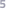

<ion-content>
  <div class="background"></div>
  <div class="topcolor"></div>
  <div class="content-bg"></div>
  <div class="logo">
    
  </div>
  <div (click)="logout()" class="logoutButton">
    <ion-icon name="log-out-outline"></ion-icon>
  </div>

  <div *ngIf="!audioPlayer" class="recordingText">All Recordings</div>
  <div *ngIf="!audioPlayer" class="content-list">
      <div  class="scroller">
        <ion-list class="content-text-background">

          <ion-item *ngFor="let f of getFileNames()" detail="false" color="rgba(196, 196, 196, 0.5)">
            <ion-checkbox *ngIf="displayUploadBoxes" (click)="selectTheFile(f.name)" slot="start">
            </ion-checkbox>
            <div class="fileName">{{ f.name }}</div> 
            
               
          </ion-item>   
          <ion-item  *ngFor="let f of fileNamesDatabase" detail="false" color="rgba(196, 196, 196, 0.5)">
            <div class="fileNameServer">{{ f }}</div> 
              
          </ion-item>      
      </ion-list> 
      </div>  
  </div>

  <div *ngIf="!displayUploadBoxes && !audioPlayer" (click)="displayTheBoxes()" class="fileSelectorBox"></div>
  <div *ngIf="!displayUploadBoxes && !audioPlayer" (click)="displayTheBoxes()"  class="fileSelectorText">Select Files to Upload</div>
  <div *ngIf="displayUploadBoxes && !audioPlayer" (click)="uploadFiles()" class="fileSelectorBox"></div>
  <div *ngIf="displayUploadBoxes && !audioPlayer" (click)="uploadFiles()" class="fileSelectorText">Click to Upload it to Cloud</div>

  <div *ngIf="audioPlayer">
    <div class="recordingText2">{{playTheFile}}</div>
    <div class="rangeBarPosition">
      <ion-range #range [(ngModel)]="progress" max="100"  (touchstart)="pauseAudioFile()" (touchend)="seek()" (mousedown)="pauseAudioFile()"  (mouseup)="seek()"></ion-range>
    </div>
    <div class="timeDisplay">{{audioPlayTimer()}}</div>
    <div (click)="forward()" class="forwardPlaybackButton">
      
    </div>
    <div (click)="forward()" class="forwardText">
      
    </div>
    <div (click)="reverse()" class="backwardPlaybackButton">
      
    </div>
    <div (click)="reverse()" class="backwardText">
      
    </div>
    <div *ngIf="!isPaused" (click)="pauseAudioFile()" class="pauseButton">
      
      <div class="circle"></div>
    </div>
    <div *ngIf="isPaused" (click)="resumeAudioFile()" class="pauseButton">
      
    </div>
    <div class="closeButton">
      <ion-icon (click)="stopAudioPlayer()" name="close-circle-outline"></ion-icon>
    </div>
  </div>


  <div *ngIf="popUpDelete" class="deletePopUp">Do you want to delete this file?
    <div (click)="deleteAudioFileLocal()" class="yes">
      <ion-icon name="checkmark-circle-outline"></ion-icon>
    </div>
    <div (click)="cancelDelete()"  class="no">
      <ion-icon name="close-circle-outline"></ion-icon>
    </div>
  </div>


  <div class="taskbar"></div>
  <div (click)="navigateToHomePage()" class="homeIcon">
    
  </div>
  <div (click)="navigateToRecordingPage()"  class="newAudioIcon">
    
  </div>
  <div class="recentFilesIcon">
    
  </div>
  <div (click)="navigateToInfoPage()" class="infoIcon">
    
  </div>
</ion-content>

